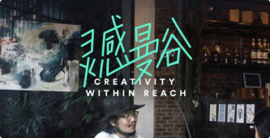
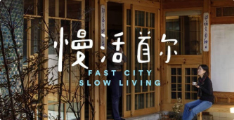
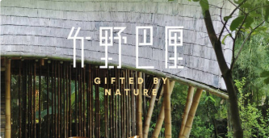

天软生存指南
食堂篇
让我们来看看天软吃饭的地方吧~
-

天津市软件学院的食堂
怎么说呢，不怎么好吃，还可以吧，我比较喜欢吃二楼清真哪一家，三楼装修的跟饭店一样，适合舍友一起聚餐，各种食材都有，三楼的大盘鸡是一绝，麻辣烫和麻辣香锅在二楼最左边，三楼最右边
-

天津工业大学的食堂
因为天软在天津工业大学，你可以去工业大学任何一个地方，但不能进教室图书馆，食堂可以去，刷支付宝就可以，工大有好几个食堂，东苑，西苑，都挺好吃的，就是平常距离有点远，时间充裕可以去吃吃看，好吃的很噢~
-

国际学术交流中心食堂
这个食堂在工大的东苑那边，打饭全是自助，两排菜排着，自己跳，什么菜品都有，各种主食，采用称重方式计算，免费的鸡蛋汤喝，特变好吃又便宜，非常值得一去，就是里的有点远，但真的很好吃的！